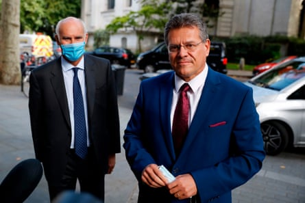
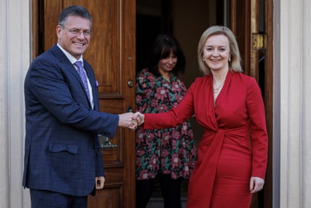
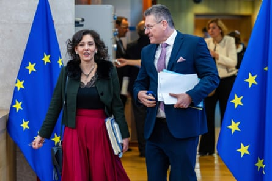

In May 2019 Maroš Šefčovič was travelling with Donald Trump and his entourage to a liquefied natural gas export terminal in Hackberry, Louisiana. The then European Commission vice-president in charge of energy had flown with Trump onboard Air Force One, calling his wife as the privilege of a first-time flyer on the presidential plane. Once at the facility, Trump gave a typically rambling speech , in which he name-checked Šefčovič from the stage, pointing into the crowd like a gameshow host: “Maroš, thank you very much. Thank you.”
“Of course,” recalled someone familiar with the day, “when Trump pronounced his name it was a bit of a disaster”. But for a top-ranking official of a multilateral organisation, this warm welcome was probably as good as it gets when it comes to the US president.
More than six years later, Šefčovič is tasked with negotiating a trade deal with the second Trump administration. The pressure is on. Trump, who claims the EU was formed to “screw the US”, has threatened to impose 50% tariffs on the bloc’s imports if there is no deal by 9 July. Meanwhile, Šefčovič is crisscrossing the world, racing to nail down trade pacts with several countries, including India , the Philippines, Indonesia and Thailand, while navigating Europe’s complex relationship with China . During one intense week in May he spent just two nights in a bed, otherwise resting in planes during an itinerary taking in France, Germany, Singapore, Japan and Kenya.
The Slovak diplomat is the EU’s longest-serving commissioner. Since arriving at the Berlaymont headquarters in 2009, he has built up a reputation as a reliable and trustworthy fixer. “He is always in a good mood, always trying to find a way,” a senior EU diplomat told the Guardian. “He is never in an extreme mood [of] ‘lets start a trade war’.”
European Commission vice president Maroš Šefčovič (right) speaks to journalists outside Europe House, in 2020 as EU ambassador to the UK Joao Vale de Almeida (left) stands byPhotograph: Tolga Akmen/AFP/Getty Images
Usually wearing a tie and matching pocket square, often with a smile and a joke, Šefčovič is seen as a diligent problem solver, not seeking to outshine his boss, the European Commission president, Ursula von der Leyen. Although few mangle his name as spectacularly as Trump, plenty in Brussels mispronounce the Slovak č, pronounced “ch”. Popular with his staff, he is reserved with the media, almost never giving interviews. “He is the kind of person who doesn’t make enemies. That is why when there is something difficult to do you ask him,” said Jean De Ruyt, a veteran Belgian diplomat, who worked alongside Šefčovič in the mid 2000s.
All his diplomatic nous was needed when he took charge of the Brexit withdrawal agreement in February 2020 for the EU. The UK had just finalised its acrimonious divorce. Relations between Brussels and Boris Johnson’s government were tense and mistrustful.
Despite the froideur, Šefčovič struck up a rapport with his opposite number, Michael Gove, culminating in a handwritten note signed by the two men to resolve disputes over the Northern Irish border, including the transportation of chilled meats. Gove nicknamed Šefčovič “the sausage king” .
But it crumbled when Gove was succeeded by the Brexit negotiator David Frost, known as “Frosty the No Man”. After the switch, the UK decided unilaterally not to apply parts of the painstakingly negotiated Northern Ireland protocol . It was a tough blow for Šefčovič, who had pushed EU officials to do the maximum. “I’d say that hurt him a lot. He had been pragmatic. He pushed his officials to go as far as they could go,” a UK source told the Guardian. But although Šefčovič launched legal action , he held off on a blazing trade war. In the end, patience paid off and he outlasted five British Conservative interlocutors: Gove, Frost, Liz Truss, James Cleverly and David Cameron.
Vice-President of the European Commission Maroš Šefčovič and UK foreign secretary Liz Truss in 2022.Photograph: Rob Pinney/AP
Colleagues praise his willingness to listen, whether to Swiss trade unions or Northern Irish politicians. But it is not just meeting and greeting. “He has a way of creating an atmosphere that is conducive to creating a solution,” one senior EU official said. The meetings with Cleverly were some of the liveliest, the person recalled: “They would have the meeting rooms crying with laughter through their banter.”
Cleverly, the foreign secretary who negotiated the Windsor framework with Šefčovič, told the Guardian their good personal relationship had made a difference. “We had to explore ideas that, had they been leaked in an incomplete fashion, would have been incredibly damaging to one of us, or the other, or indeed both.” Cleverly said he felt able to present proposals knowing “the conversation wouldn’t be used as some kind of leverage or wouldn’t be leaked”.
Against this smooth record, one failure stands out: Šefčovič’s defeat in the 2019 Slovakian presidential elections to Zuzana Čaputová, a liberal lawyer who triumphed on a platform of tolerance and anti-corruption . The election was held the year after the murders of the investigative journalist Ján Kuciak and his fiancée, Martina Kušnírová. Slovakia’s ruling Smer party, badly tainted by the killings , could not find anyone to stand. Šefčovič, not a Smer party member, was persuaded to run but seemed ill-cast for the role of anti-system populist that party strategists wanted.
Nonetheless, facing Čaputová in the final round, Šefčovič attacked her supposed “super-liberal agenda” as being against Christian values. Shocking some EU observers, he criticised same-sex partnerships and the European policy of migrant quotas . Martin Burgr, a political strategist on Čaputová’s team, said Šefčovič began as “a very decent opponent”, but by the end “was forced … to be harder and more populistic”. That was misguided, Burgr suggested: “He was seen as a liberal from Europe, as a Brussels guy, not a conservative person. I think this was a mistake to try to make him something that he wasn’t and that he is not.”
Maroš Šefčovič and European Commissioner for Preparedness and Crisis, Hadja Lahbib, arrive for the weekly EU College of Commissioners in Brussels this year.Photograph: Geert Vanden Wijngaert/AP
Since that defeat, Šefčovič has been twice renominated as Slovakia’s EU commissioner. Returning in 2024, he was given the trade brief, one of the biggest jobs in the commission, reporting directly to von der Leyen. He has a good relationship with his workaholic boss , another pragmatic dealmaker. The two are the only senior EU officials said to use the basement gym in the commission’s headquarters. Šefčovič, a student athlete, favours Diet Coke, and walks his two golden retrievers twice a day.
Meantime, he has plenty on his plate. European insiders are downbeat about the prospects of a zero-tariff deal with the US. “I cannot imagine how we will agree,” the senior EU diplomat said. “They [the US] want to collect tariffs; they want to be beautifully rich.” But Šefčovič will not give up, the person insisted. “He will be coming with new proposals, other proposals, trying to convince.”